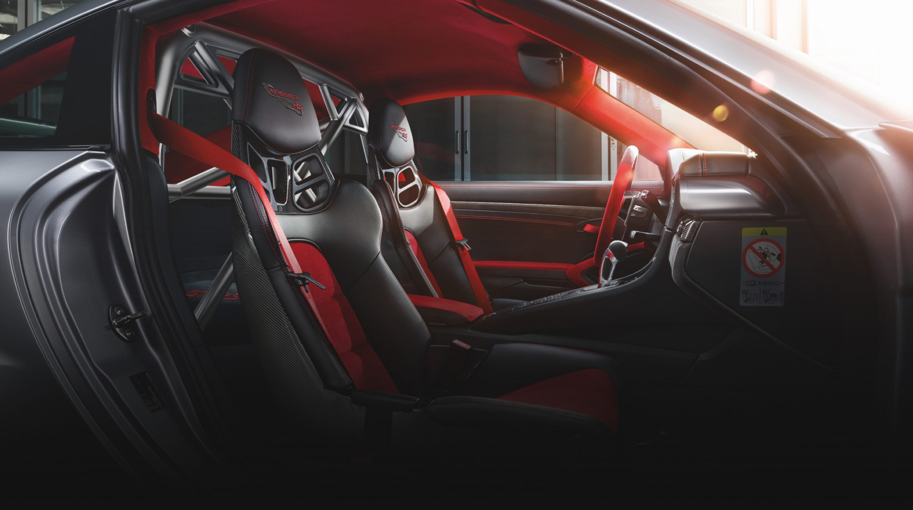
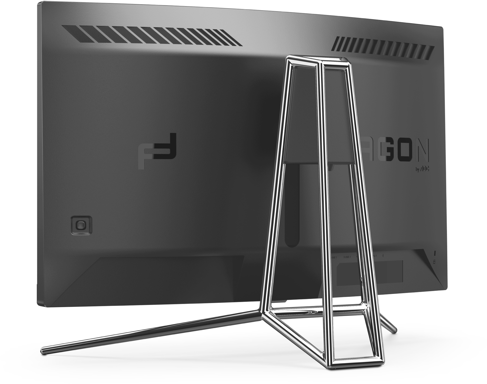
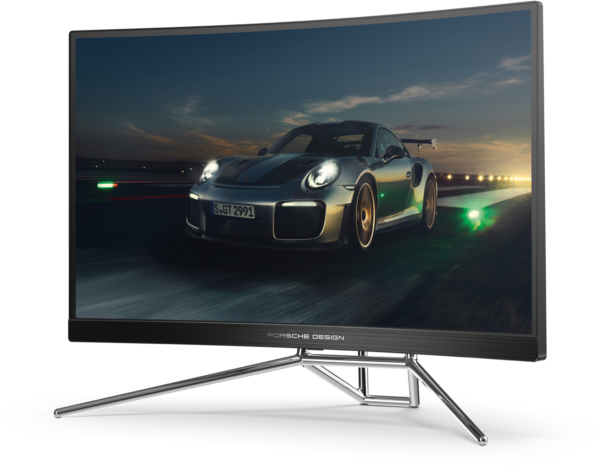
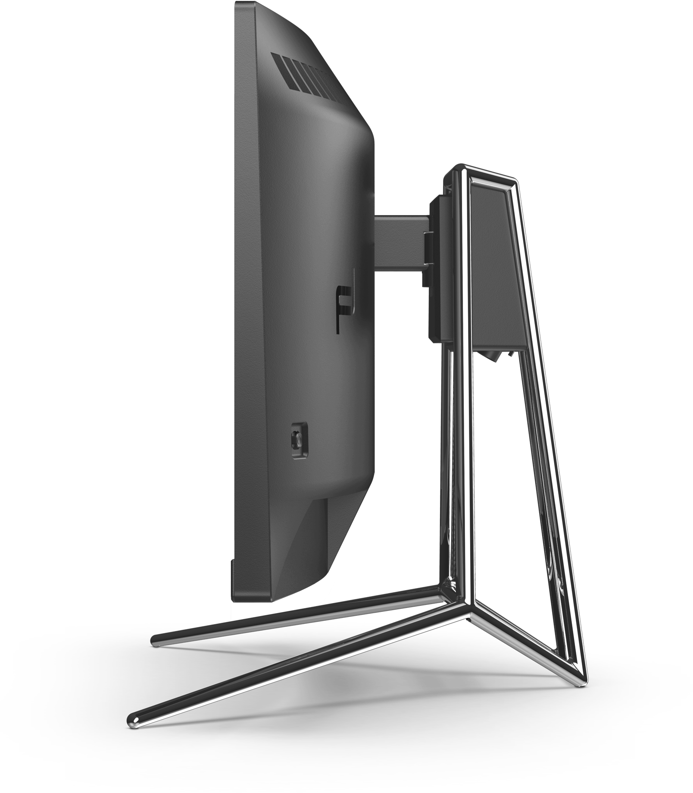
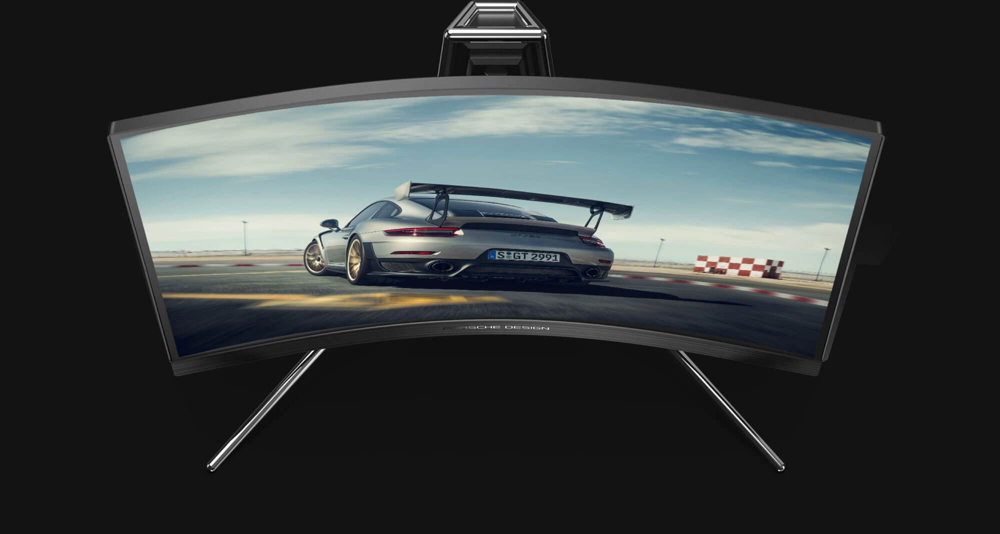
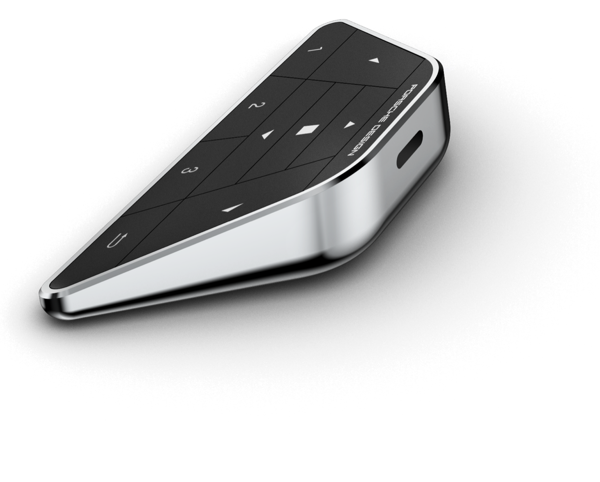
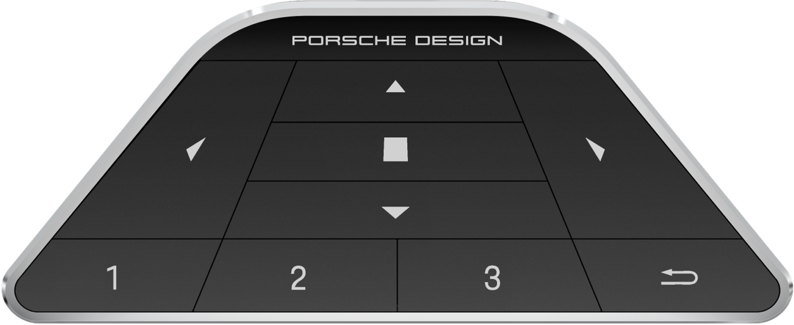
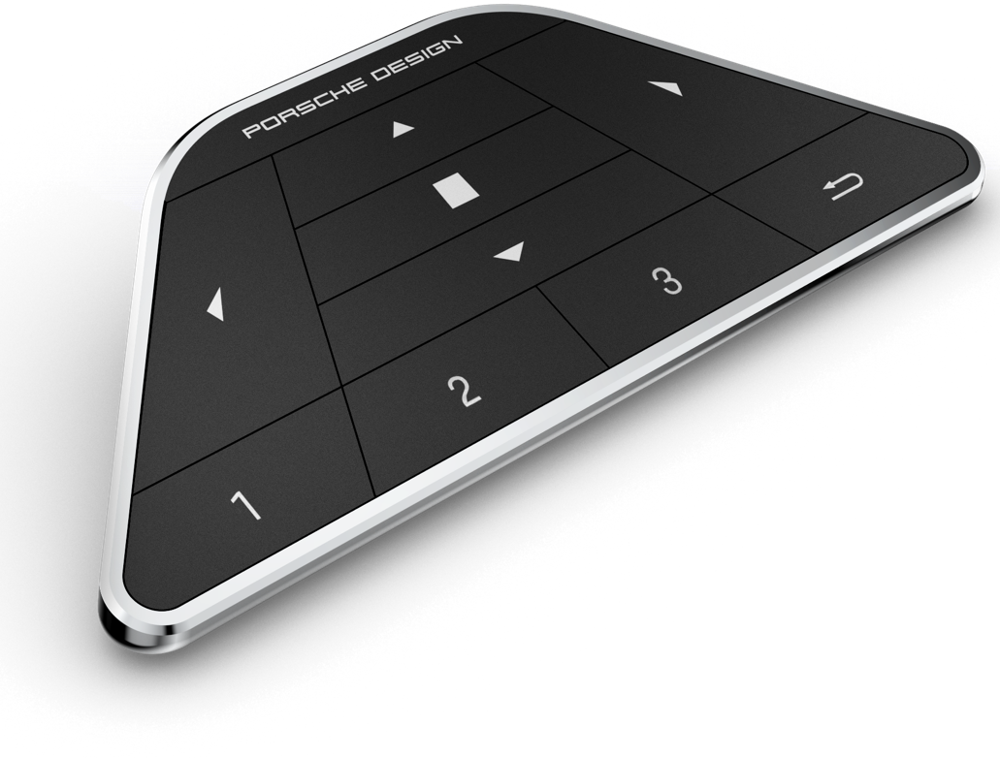
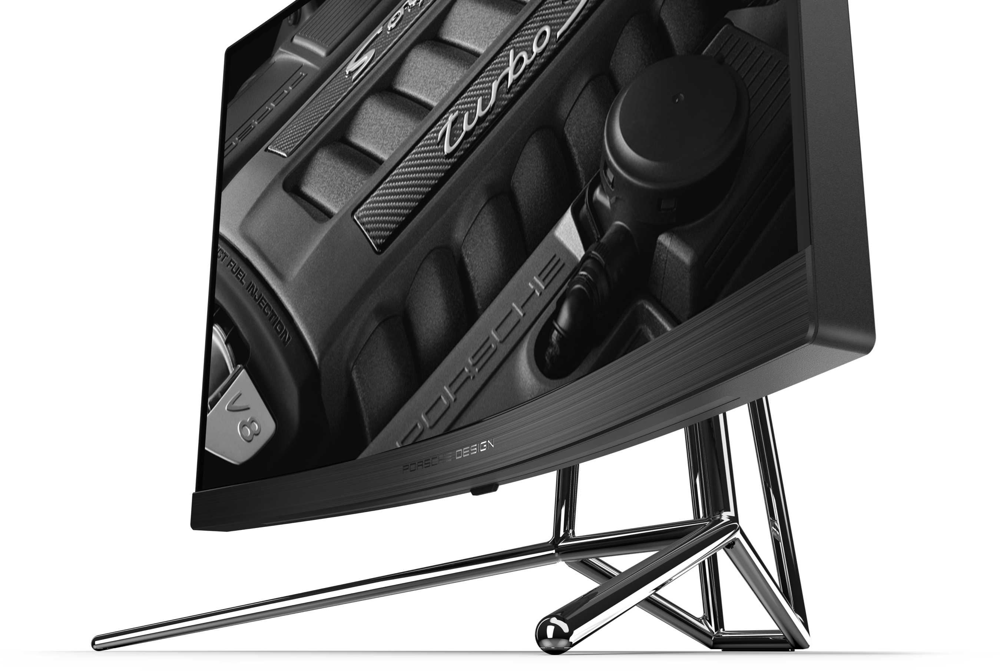

Стенд, вдохновленный гоночным каркасом безопасности

Вневременной дизайн и безупречная производительность

Вневременной дизайн и безупречная производительность

Вневременной дизайн и безупречная производительность

Сверхбыстрая частота обновления 240 Гц
240 Гц полностью раскрывает возможности новейших графических процессоров, гарантируя беспрецедентную
плавность изображения на экране. Благодаря резкости каждой детали и кристальной четкости каждого
движения, почувствуйте как ваши реакции преобразуются в непосредственные действия и улучшают игру.

Экстремальное погружение с кривизной 1000R
Изогнутый монитор огибает вас, помещает в центр действия и обеспечивает полное погружение в
игровой процесс, создавая ощущение будто вы сидите за рулем гоночного автомобиля.
Скорость без размытия изображения
Время отклика равное 0.5 мс означает скорость без размытия изображения для полноценного наслаждения
игрой. Скоростное движения и драматичные переходы будут плавными без раздражающих задержек
изображения. Выберите правильный путь к успеху, не позволяйте медленному монитору остановить вас.
Проекция логотипа
Рама монитора привлекает внимание к его задней части, тогда как переднюю часть выделяет световая
полоса, которая меняет цвет в зависимости от ситуации в игре и проецирует на поверхность стола
логотип Porsche Design или AGON.



Беспроводная игровая клавиатура
Горячие клавиши на клавиатуре позволяют быстро переключать настройки дисплея, например, между
игровыми жанрами, регулировать FPS и палитру RGB и т. д.
Специальное игровое экранное меню Porsche
Специально для PD27 было разработано новое экранное меню. Оно содержит все игровые настройки —
игровые режимы, световые эффекты FX, настройки звука и цвета.
Благодаря разрешению 2560 x 1440, Quad HD (QHD), достигаются
великолепные качество и четкость изображения, позволяющие увидеть мельчайшие детали. Соотношение
сторон 16:9 широкого экрана обеспечивает большое пространство для работы и расположения окон, а
также позволяет наслаждаться играми и фильмами в их исходном разрешении.
QHD
Vesa Certified DisplayHDR™ 400
Технология высокого динамического диапазона (HDR) даже начального уровня является
значительным прорывом по сравнению с изображением обычного монитора. Пиковая характеристика
яркости в 400 кд/м², широкая цветовая палитра и повышенная контрастность позволяют выводить
на экран изображение значительно более высокого качества. Сертификат VESA гарантирует
высокую детализацию изображения и реалистичность отображаемых в играх и фильмах миров.

Стереосистема DTS мощностью 5 Вт
Встроенная аудиосистема DTS позволяет слышать рев двигателя так, будто вы находитесь за рулем
суперкара.
Технические характеристики и возможности
- 240hz
- Curved
- Qhd resolution
- Display hdr 400
- 0.5ms
- Freesync premium pro
-
Размер экрана (дюймы)
27 inch
-
Разрешение
2560x1440
-
Частота обновления
240 Гц
-
Время отклика (MPRT)
0.5 ms
-
Тип панели
VA
-
Яркость (стандартная)
550

605.5мм
439.9мм